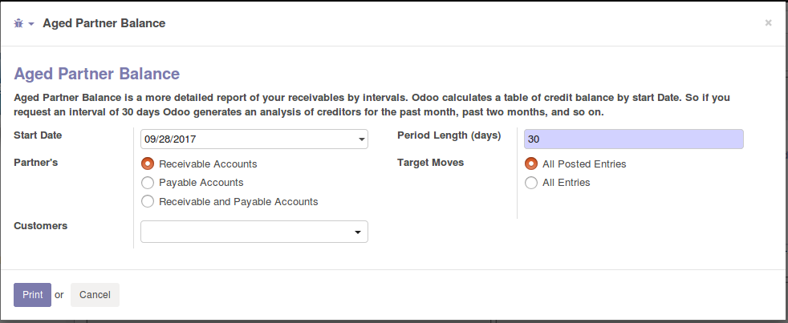
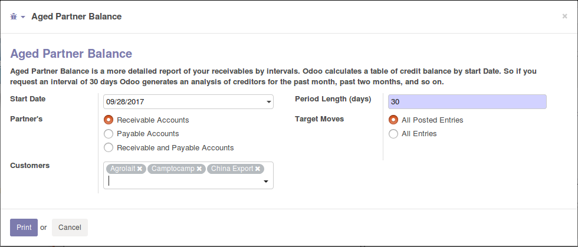

This Cybrosys's module allows you to easily check Partners Aging, Currently we can't take individual aging report. By using this modules we can take aging report of one or more customers.
You can generate aged partner report from wizard with partner filter


This will open partner ledger report wizard with the selected partner.
You can add or remove partner from wizard in case of fault selection